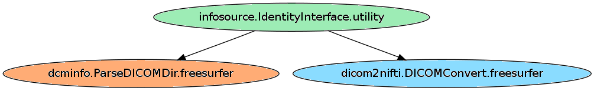
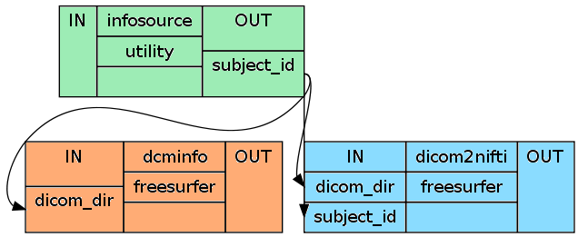
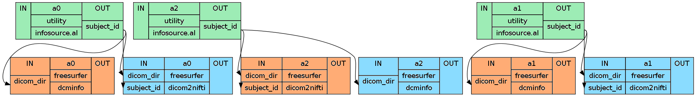

The first step after data acquisition is as expected: Preparation! Before we can run the data threw a pipeline we have to convert the dicoms into niftis and execute the recon-all process for each subject. Otherwise we can’t use the benefits of FreeSurfer. Because this can be done in rather little code it is a very good example to get started.
Let us start with the conversion of the 3D dicoms into 4D nifti files.
The first step of every pipeline is always to import all the necessary modules. In this case we only need the basic modules os, util, pipeline.engine and the freesurfer interface.
import os # system functions
import nipype.interfaces.freesurfer as fs # freesurfer
import nipype.interfaces.utility as util # utility
import nipype.pipeline.engine as pe # pypeline engine
After importing the modules, it is recommended to specify all the necessary variables like the path to the experiment folder, a list of the subject identifiers etc.
#Specification of the folder where the dicom-files are located at
experiment_dir = '~SOMEPATH/experiment'
#Specification of a list containing the identifier of each subject
subjects_list = ['subject1','subject2','subject3','subject4']
#Specification of the name of the dicom and output folder
dicom_dir_name = 'dicom' #if the path to the dicoms is: '~SOMEPATH/experiment/dicom'
data_dir_name = 'data' #if the path to the data should be: '~SOMEPATH/experiment/data'
Let us now construct the three nodes we want to use to create our preparation pipeline. First we need to define the infosource-node which specifies on which subjects the workflow is run on.
#Node: Infosource - we use IdentityInterface to create our own node, to specify
# the list of subjects the pipeline should be executed on
infosource = pe.Node(interface=util.IdentityInterface(fields=['subject_id']),
name="infosource")
infosource.iterables = ('subject_id', subjects_list)
Now we define the main node for the data conversion, DICOMConvert.
#Node: DICOMConvert - converts the .dcm files into .nii and moves them into
# the folder "data" with a subject specific subfolder
dicom2nifti = pe.Node(interface=fs.DICOMConvert(), name="dicom2nifti")
If we now look at the section nipype.interfaces.freesurfer.preprocess about the DICOMConvert node we see the following:
[Mandatory]
base_output_dir : (a directory name)
directory in which subject directories are created
dicom_dir : (an existing directory name)
dicom directory from which to convert dicom files
Remember that the path to the dicoms changes from subject to subject. Therefore we can’t declare the variable dicom_dir right away. But because we already have an infosource node, we will be able to overcome this problem when we establish the connections between the nodes. Let us first define the path to the output dir:
dicom2nifti.inputs.base_output_dir = experiment_dir + '/' + data_dir_name
#This will store the output to '~SOMEPATH/experiment/data'
Now we have to specify the optional inputs file_mapping, out_type and subject_dir.
dicom2nifti.inputs.file_mapping = [('nifti','*.nii'),('info','dicom.txt'),('dti','*dti.bv*')]
dicom2nifti.inputs.out_type = 'nii'
dicom2nifti.inputs.subject_dir_template = '%s'
This dicom2nifti node will convert the dicoms into niftis and create a summary text file calls shortinfo.txt which contains most of the important informations about the dicoms:
dcmdir ~SOMEPATH/experiment/dicom/subject1
PatientName subject1
StudyDate 20150403
StudyTime 083819.578000
1 fl2d1 localizer_BC 578000-1-1.dcm
2 fl2d1 localizer_32 578000-2-1.dcm
3 fl3d1_ns AAScout 578000-3-100.dcm
4 tfl3d1_ns T1_MPRAGE_1mm_iso 578000-4-100.dcm
5 epfid2d1_90 ge_functionals_2meas 578000-5-1.dcm
6 fm2d2r field_mapping 578000-6-10.dcm
7 fm2d2r field_mapping 578000-7-10.dcm
8 epir2d1_96 ep2d_t1w 578000-8-10.dcm
9 epfid2d1_96 ge_functionals_125 578000-9-10.dcm
10 epfid2d1_96 ge_functionals_125 578000-10-10.dcm
But because we also want to know how many time points were acquired and what the resolution of the dicoms are we’ll have to run a node called ParseDICOMDIR which gives us an output text file with the following content:
1 578000-1-2.dcm 1 0 2 0 512 512 3 1 0.0086 4.0000 localizer_BC
4 578000-2-2.dcm 2 0 2 0 512 512 3 1 0.0086 4.0000 localizer_32
7 578000-3-1.dcm 3 0 1 0 128 128 128 2 0.0024 1.1300 AAScout
263 578000-4-1.dcm 4 0 1 0 256 256 176 1 2.5300 3.4800 T1_MPRAGE_1mm_iso
439 578000-5-1.dcm 5 0 1 1 96 90 28 2 9.5000 30.0000 ge_functionals_2meas
441 578000-6-1.dcm 6 0 1 0 96 96 28 1 0.5000 2.8300 field_mapping
469 578000-7-1.dcm 7 0 1 0 96 96 28 1 0.5000 5.2900 field_mapping
497 578000-8-1.dcm 8 0 1 0 96 96 28 1 10.0000 56.0000 ep2d_t1w
525 578000-9-1.dcm 9 1 2 1 96 96 28 60 8.0000 30.0000 ge_functionals_125
585 578000-10-1.dcm 10 1 2 1 96 96 28 60 8.0000 30.0000 ge_functionals_125
This output shows us that the T1-file has resolution of 256x256x176 and that the two functional runs, file 9 and 10, have 60 time points. Now, let us implement this ParseDICOMDir node.
#Node ParseDICOMDIR - for creating a nicer nifti overview textfile
dcminfo = pe.Node(interface=fs.ParseDICOMDir(), name="dcminfo")
dcminfo.inputs.sortbyrun = True
dcminfo.inputs.summarize = True
dcminfo.inputs.dicom_info_file = 'nifti_overview.txt'
As before with the dicom2nifti node, we have the problem with the dcminfo node, that the input variable dicom_dir changes for each subject. And as before, we will see how to handle this issue during the connection of the nodes.
After we’ve defined all the nodes we want to use, we are ready to implement the preparation pipeline:
#Initiation of the preparation pipeline
prepareflow = pe.Workflow(name="prepareflow")
#Define where the workingdir of the all_consuming_workflow should be stored at
prepareflow.base_dir = experiment_dir + '/workingdir_prepareflow'
Now we’ve defined all the nodes and implemented the preparation pipeline. The only thing missing is the connection of the different nodes in the pipeline. But before we can do this, it is important to be aware about outputs, that get created and the inputs that have to be provided and more importantly how they look like.
As you can see, for both nodes dicom2nifti and dcminfo the input from dicom_dir does change for each subject. But so also do the outputs of infosource. The only thing we have to do is to take the output 'subject1' from infosource and change it into '~SOMEPATH/experiment/dicom/subject1/' for dicom2nifti and into '~SOMEPATH/experiment/data/subject1/' for dcminfo. This can be accomplished by inserting a function into the connection process.
Let’s call this function pathfinder, which takes as arguments the subjectname and the foldername (either dicom or data) and returns '~SOMEPATH/experiment/foldername/subjec_name/'.
def pathfinder(subjectname, foldername):
return os.path.join(experiment_dir, foldername, subjectname)
Now we can start with the connection of the nodes.
#Connect all components
prepareflow.connect([(infosource, dicom2nifti,[('subject_id', 'subject_id')]),
(infosource, dicom2nifti,[(('subject_id', pathfinder, 'dicom_dir_name'),
'dicom_dir')]),
(infosource, dcminfo,[(('subject_id', pathfinder, 'dicom_dir_name'),
'dicom_dir')]),
])
Perhaps it’s best if we take a closer look at the second connection. As it is written, the function pathfinder takes 'subject_id' as its first argument which will represent subjectname in the function. 'dicom_dir_name' will be given as the second argument foldername to the pathfinder function. The return value of the pathfinder function will than be sent as input 'dicom_dir' to the dicom2nifti node.
There’s an important issue about functions you have to consider in Nipype Version 0.4. If you would want to run the pathfinder function above you would encounter following error:
NameError: ("global name 'os' is not defined", 'Due to engine constraints all imports have to be done inside each function definition')
This occurs because all values that you are using in a function have to be specified or imported within it’s boundaries. Therefore we have to extend the function a bit by importing the os module and specifying the experiment_dir variable.
def pathfinder(subject, foldername):
import os
experiment_dir = '~SOMEPATH/experiment'
return os.path.join(experiment_dir, foldername, subject)
After the connection of the nodes there is only one last thing to do. To actually run the pipeline.
prepareflow.run(plugin='MultiProc', plugin_args={'n_procs' : 2})
Important
After running the prepareflow we now have a folder called data that contains the converted nifti files. Additionally the pipeline has created a folder workingdir_prepareflow which contains a lot of unnecessary outputs. But within this pile of data lie our nifti_overview.txt files for each subject, created by the dcminfo node. That’s why I would recommend to add some additional python code after the run command to save those outputs in the corresponding subject subfolders in the data folder.
In our case the data we are interested in is in the folder '~SOMEPATH/experiment/workingdir_prepareflow/ prepareflow/_subject_id_subject1/dcminfo' and we want to move it into '/mindhive/gablab/u/mnotter/Desktop/TEST/data/subject1'. This can be accomplished with the following code:
#to run the loop for each subject
for subject in subjects_list:
#specify where the nifti_overview.txt file is stored at
from_path = os.path.join(prepareflow.base_dir,prepareflow.name,'_subject_id_%s'%subject,
dcminfo.name,dcminfo.inputs.dicom_info_file)
#specify where to store the nifti_overview.txt file at
to_path = os.path.join(dicom2nifti.inputs.base_output_dir,subject)
#with os.system('text') you're able to state the command 'text' in your terminal
#therefore we use mv to move the date
os.system('mv %s %s'%(from_path, to_path))
Note
To finally delete the workingdirectory of the prepare pipeline with all it’s content we can use the command rm -rf ~SOMEPATH/experiment/workingdir_prepareflow and we’re done.
os.system('rm -rf %s'%prepareflow.base_dir)
Hint
The code to this section can be found here: dicom2nifti.py
After the connection of all nodes is established we are able to create a graph.dot file which gives us a very good overview over our pipeline. For the example above, the command would simply be:
prepareflow.write_graph(graph2use='flat')
There are different kinds of graphs you can create. But basically there is a simple overview graph called graph.dot that shows you the basic connections between nodes. In the more detailed version which creates a graph_detailed.dot file you can also see which outputs and inputs are connected together.
In the normal-dot file you can see how the nodes are connected generally. The name is composed in the format of nodename.algorithm.interface
The detailed version of the graph gives you better informations about which input is connected to which output.
If you set graph2use to 'exec' you get the same level of detail as if you would run it with 'flat' but all the runs that would be running in parallel are shown at once. In this case there would be three runs in parallel: a0, a1 and a2
Now that we are able to build a preparation pipeline, it will be a piece of cake to create a recon-all pipeline. Only after executing the recon-all algorithm will we be able to use all the benefits of the FreeSurfer interface.
First let us again import all necessary modules and specify the experiment specific parameters.
import os # system functions
import nipype.interfaces.freesurfer as fs # freesurfer
import nipype.interfaces.utility as util # utility
import nipype.pipeline.engine as pe # pypeline engine
#Specification of the folder where the dicom-files are located at
experiment_dir = '~SOMEPATH/experiment'
#Specification of a list containing the identifier of each subject
subjects_list = ['subject1','subject2','subject3','subject4']
#Specification of the output folder - where the T1 file can be found
data_dir_name = 'data'
#Node: SubjectData - we use IdentityInterface to create our own node, to specify
# the list of subjects the pipeline should be executed on
infosource = pe.Node(interface=util.IdentityInterface(fields=['subject_id']),
name="infosource")
infosource.iterables = ('subject_id', subjects_list)
#Node: Recon-All - to generate surfaces and parcellations of structural
# data from anatomical images of a subject.
reconall = pe.Node(interface=fs.ReconAll(), name="reconall")
reconall.inputs.directive = 'all'
#Because the freesurfer_data folder doesn't exist yet
os.system('mkdir %s'%experiment_dir+'/freesurfer_data')
reconall.inputs.subjects_dir = experiment_dir + '/freesurfer_data'
T1_identifier = 'struct.nii' #This is the name we manually gave the T1-file
Important
Now we are ready to implement the pipeline and connection the infosource with the reconall node. As in the example about the conversion of the dicoms into niftis, we will use again a function called pathfinder to specify the exact location of the T1-file of each subject. Note that the function takes three arguments in this case.
#implementation of the workflow
reconflow = pe.Workflow(name="reconflow")
reconflow.base_dir = experiment_dir + '/workingdir_reconflow'
#defenition of the pathfinder function
def pathfinder(subject, foldername, filename):
import os
experiment_dir = '~SOMEPATH/experiment/experiment'
return os.path.join(experiment_dir, foldername, subject, filename)
#connection of the nodes
reconflow.connect([(infosource, reconall,[('subject_id', 'subject_id')]),
(infosource, reconall,[(('subject_id', pathfinder, data_dir_name,
T1_identifier),'T1_files')]),
])
#run the recon-all pipeline (as recommended in serial mode)
reconflow.run(plugin='Linear')
#to delete the workingdir of the reconflow we use again the shell-command "rm".
#The important recon-all files are already stored in the "freesurfer_data" folder
os.system('rm -rf %s'%reconflow.base_dir)
Hint
The code to this section can be found here: recon-all.py